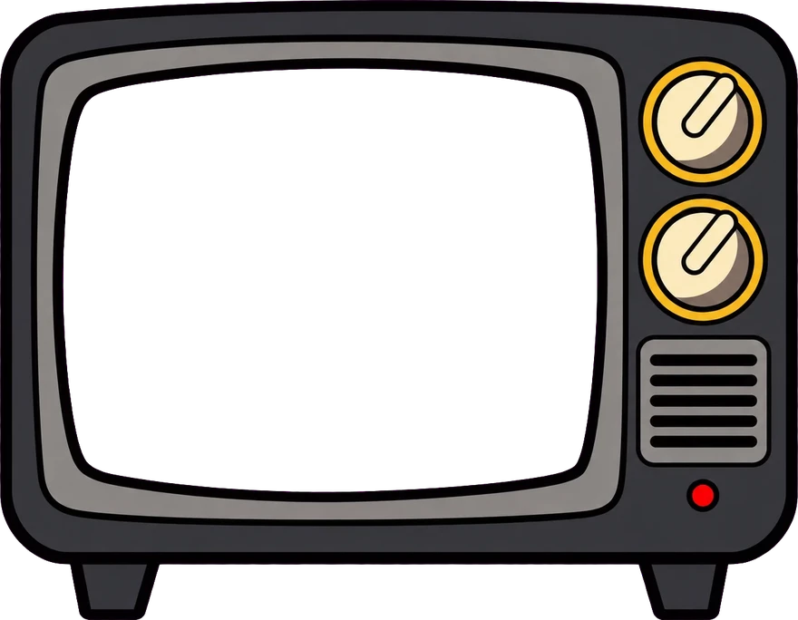
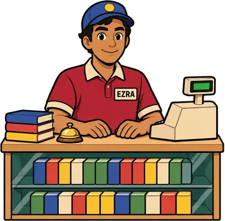
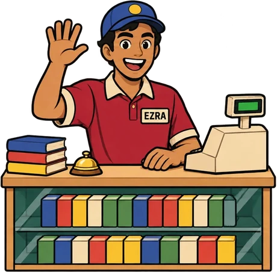
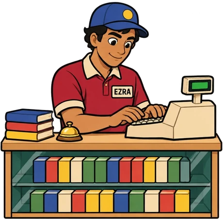

Games · Web apps & sites
Stocking the shelves…
DEV VIEW · only you see this
Come in, we'reOpen

The knobs work: turn them, or click their right or left side. Top is the channel, bottom the volume, and the red light is the power.
Drag the box to turn it over, or press ← →.


